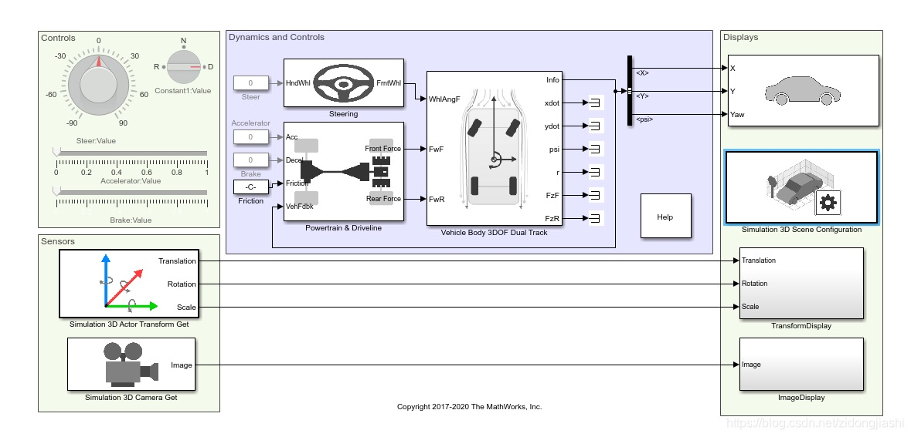
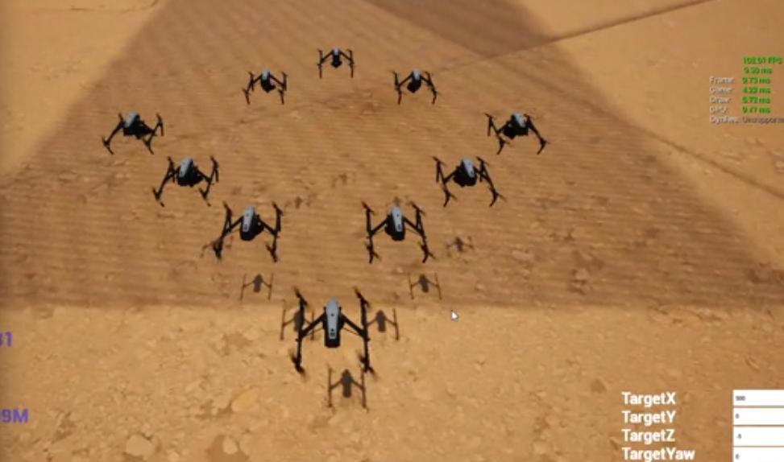

01 / VEHICLE SIMULATION
CARLA / UE4 の回放
四輪車、多輪車、履帯車両を対象とした仮想環境。ログを用いて状態を確認し、挙動の再現と問題の切り分けを行いました。
仮想環境で、動作を再現し、問題を確認する。その経験を Physical AI の開発へ広げたいと考えています。
既存シミュレータの理解から始め、C++ の機能開発、Python を含むモジュール連携、再現性と安定性の改善に取り組みます。
仮想環境は、画面上で動くことだけが目的ではありません。同じ条件を再現し、挙動と問題を確認できることが、評価に使えるシミュレータの土台になると考えています。
車両シナリオを扱う仮想環境での動作確認と回放。
無人機群シミュレーションにおけるリアルタイム処理と同期。
Unreal Engine 開発での計測、切り分け、改善後の再確認。
以下は sim に掲載している実際の技術領域を、今回の面接用に読みやすく整理したものです。顧客名や機微なシナリオは開示していません。
四輪車、多輪車、履帯車両を対象とした仮想環境。ログを用いて状態を確認し、挙動の再現と問題の切り分けを行いました。

Unreal Engine の表示・シナリオ側と外部プログラムをつなぎ、状態と制御指令の流れを扱うソフトウェア側の統合に取り組みました。

複数エンティティとリアルタイム表示を扱うシミュレーション。マルチスレッド処理と、主スレッドへの影響を意識して実装しました。
CARLA / UE4、回放、C++ / Python、リアルタイム処理を足場に、御社のシミュレータ構成、データの流れ、評価方法を理解したうえで開発に参加したいと考えています。